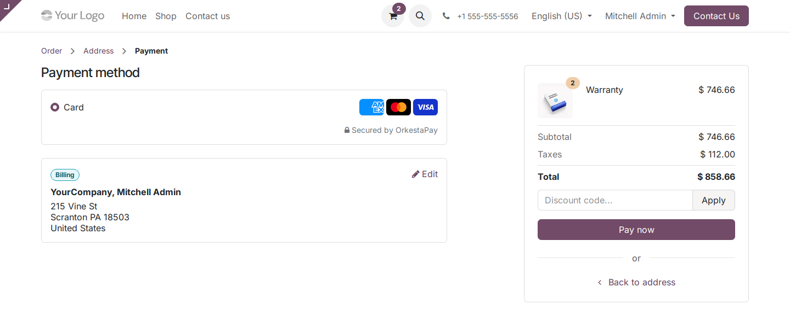
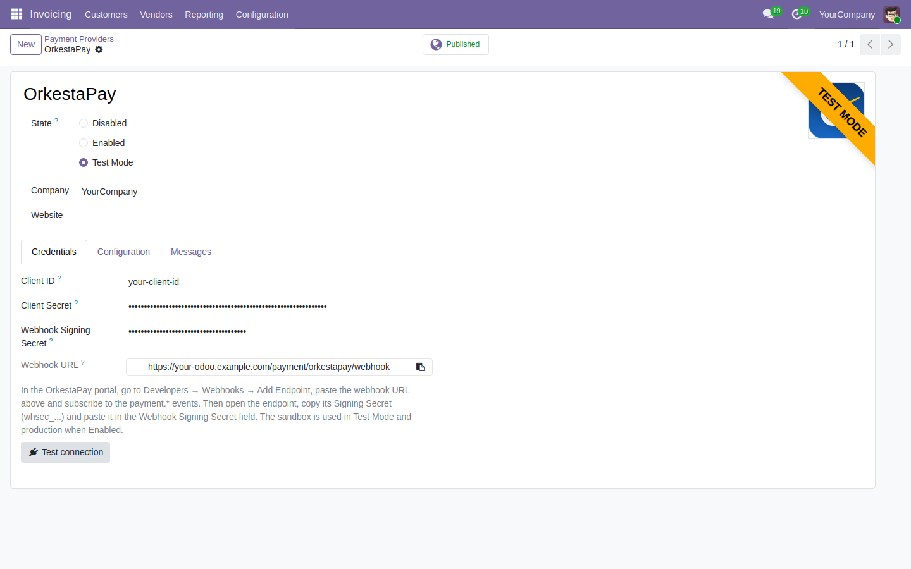
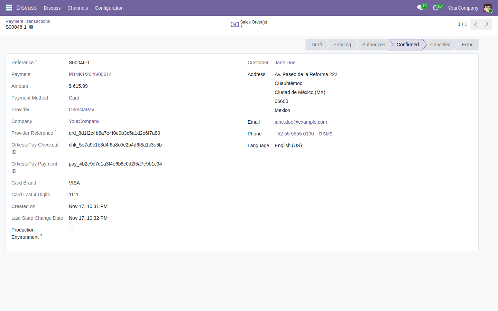

OrkestaPay appears with the other payment methods of your shop.

Requirements: Odoo 19 and an OrkestaPay account with its API keys (Client ID and Client Secret).


To create the checkout, Odoo sends the order reference, amount and currency; when the order can be itemized, the order lines (product name, internal reference, quantity, price and taxes), shipping and discounts; the buyer's name, email and country, and their phone and addresses when available; technical identifiers (Odoo transaction id, sales order number, customer id in Odoo, database identifier and module version); and the return URLs to your Odoo. Card data is entered only on the OrkestaPay checkout and is never stored or processed by Odoo.
Write to support@orkestapay.com or see the OrkestaPay documentation.